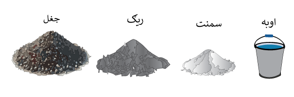

مهرباني وکړئ د هغه ساحې ابعاد چمتو کړئ چې تاسو یی کانکریټ کول غواړئ
دوچو مواده حجم لاندی
د کانکریټ مارک یا درجه اننخاب کړی ترڅو معلومه کړئ چې څومره سمنټ، ریګ او جغل ته اړتیا لرئ
جغل = ( متر مکعب )
ریګ: = ( متر مکعب )
سمنت = (کیلو بوجی ۵۰)
سیخ = ( کیلوګرام)
اوبه = ( لیتر)
داکمیتونه یا مقدارونه یو براورد ده کیدای شی چی ستاسو براورد فرق ولری
نوټ: د کانکریټو درجه یا مارک د کانکریټو قوت او کیفیت ښيي، او هغه حد اقل مقاومت دی چې کانکریټ باید د جوړېدو له ۲۸ ورځو وروسته ولري. په مارک کې د M توری د میکس لپاره دی، او هغه نمبر یې د کانکریټو مقاومت په نیوټن فی میلیمتر مربع کې څرګندوي. د بېلګې په توګه، M20 کانکریټ باید لږ تر لږه ۲۰ N/mm² مقاومت ولري. مختلف مارکونه د بېلابېلو ساختماني کارونو لپاره کارېږي، له کورونو نیولې تر لویو پلونو پورې. د مناسب مارک ټاکل ډاډ ورکوي چې ساختمان به خپل بارونه او فشارونه په خوندي ډول وزغمي.
Copyright © Abdullah Ameen